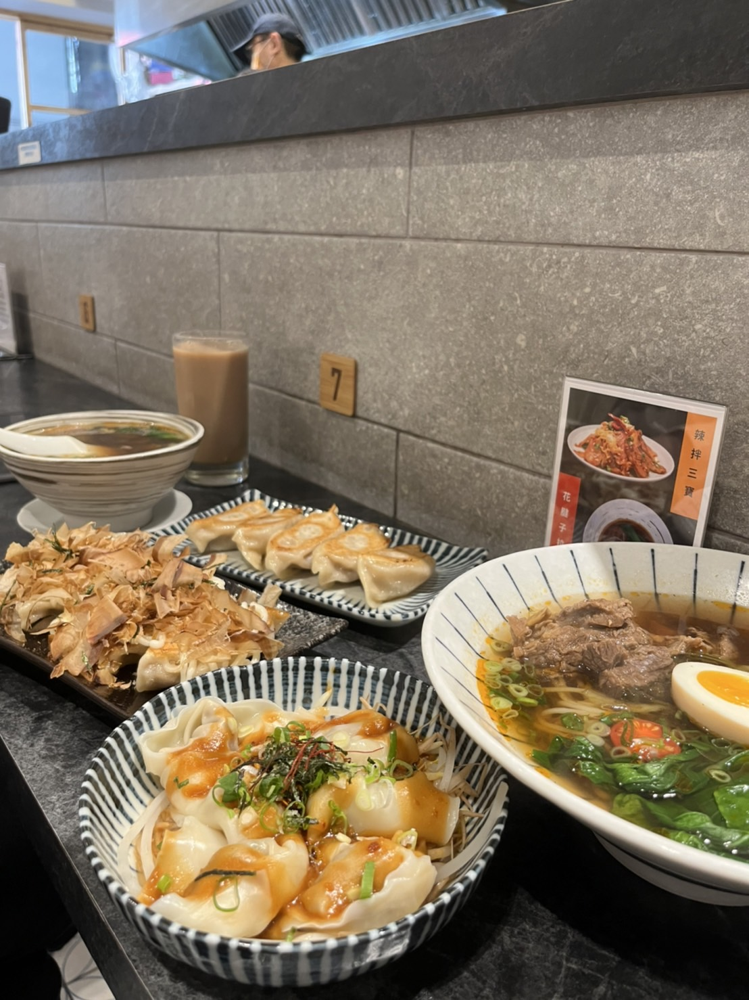
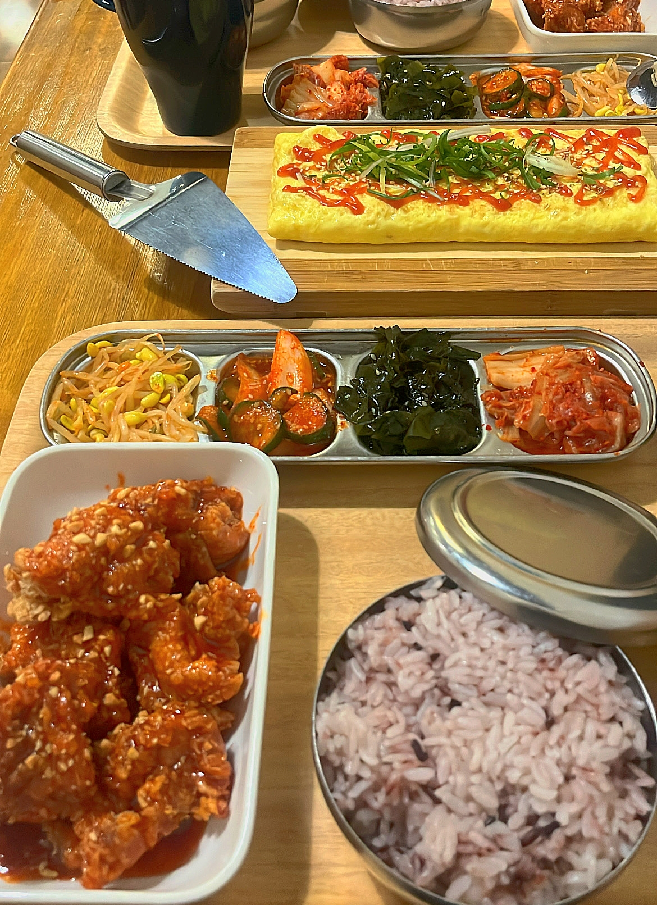
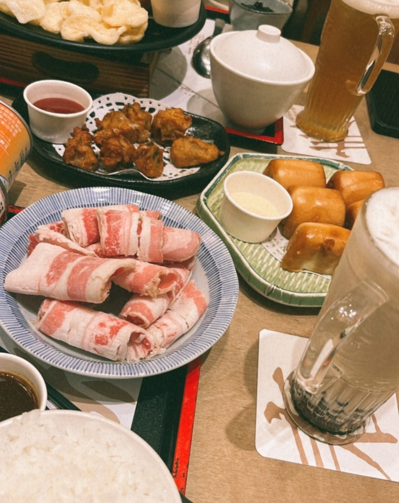
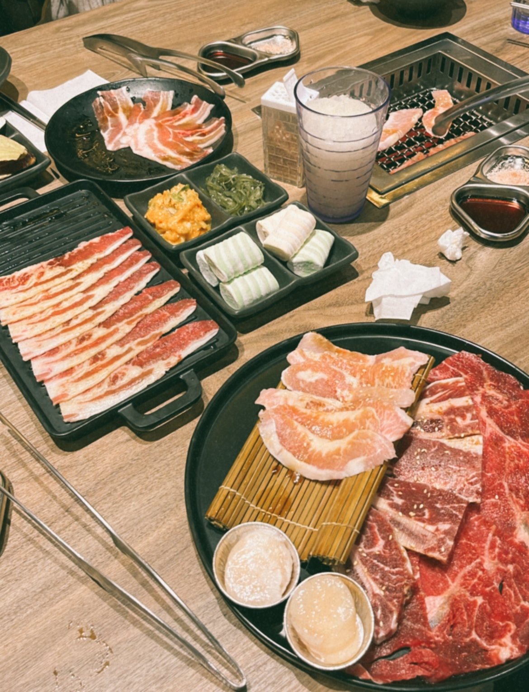

ღ 青禾鍋物 ღ
苗栗眾多火鍋店之一！店家套餐款式多，而且還有前菜與甜點！不僅有特色的湯頭以外，擺盤整體也相當精緻！愛吃火鍋的也可以將它列入考慮喔！
營業時間：
平日11:00-14:00、17:00-22:00 、
週末11：00-22：00
ღ 掰哩掰哩 韓食料理 ღ
超美韓國咖啡廳裝潢，就能吃到平價韓式料理菜色，必點的韓式炸雞、韓式豆腐鍋、海鮮煎餅。適合一家大小都能享受的台中親子友善韓式料理餐廳！
營業時間：11:00-14:30、
17:30-21:30 週四公休


ღ 專牛餃煎 ღ
在台中火車站附近新開的小餐館，店名取的很有意思，因為裡頭賣的餐點真的就和牛有關，包括牛肉肉餡的燒餃子、牛肉麵，連餛飩也是牛肉餡。
營業時間：11:00-14:00、
17:00-20:00 週三公休
ღ 濟州Mr.KIM韓式炸雞 ღ
老闆來自韓國濟州島，除了別具風味的韓式料理，還是在台灣風靡已久的韓式炸雞都是店裡的超人氣!!對於餐點品質相當的執著，食材當天新鮮配送。
營業時間：11:00-13:40 17:00-20:40


ღ 鉄鮮森 ღ
是台中知名燒肉「森森燒肉」的新品牌，主打鐵板燒及個人燒肉的結合，是很新的創意！鮮紅色系工業風裝潢，動線及用餐區都看起來乾淨且整齊。
營業時間：11:30-14:00 17:00-20:00
